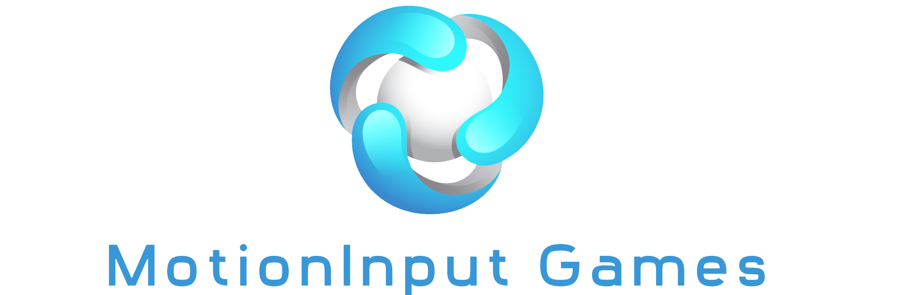

Superhero Sportsday: Winter Edition
An inclusive winter sports game for neurodivergent children, played entirely with full-body motion. Eight winter activities, no controllers, all safe and engaging.
Winter brings ice skating, sledding, and skiing, but for many neurodivergent children those activities can feel overwhelming. Superhero Sportsday: Winter Edition lets them experience the magic of winter in a safe, playful environment. Powered by MotionInput, children play with their whole body, with no controllers at all, across eight winter activities that keep them active while, most importantly, having fun. It was built in official partnership with the National Autistic Society and MotionInputGames.
Role & build
I led the team that designed and built Superhero Sportsday: Winter Edition, a 3D Unity game that turns full-body movement into play. The work ran in a client-centered partnership setting, where the experience of the children, accessibility, and a safe, welcoming feel guided every decision, from the activities we chose to how forgiving each interaction is.
Project overview and gameplay walkthrough.
Eight winter activities
Ice Skating
Glide across a frozen lake by moving your legs.
Kayaking
Paddle through icy water by mimicking a stroke.
Skiing
Lean and carve down snowy slopes.
Sledding
Steer a sled down the hill.
Snowball
Launch snowballs with a throwing motion.
Snow Angel
Sweep your arms to make snow angels.
Speed Skating
Race the rink with skating strides.
Presents Delivery
Deliver festive presents around the map.
Official partnership
Superhero Sportsday: Winter Edition was developed under official partnership with two organizations:
National Autistic Society
The UK's leading charity for autistic people and their families. The project was developed at their request and under their guidance.

MotionInputGames
The team behind MotionInput, the camera-based body-tracking technology that powers the game's controller-free play.